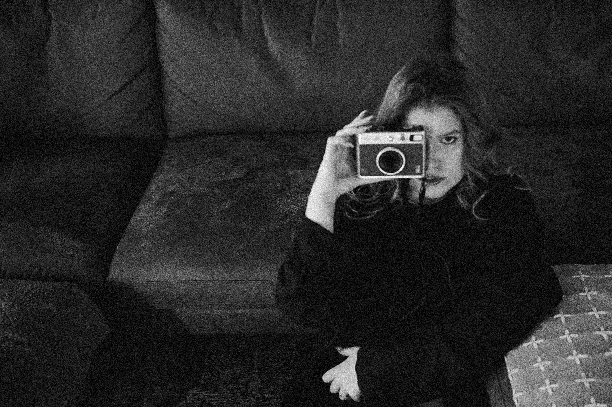
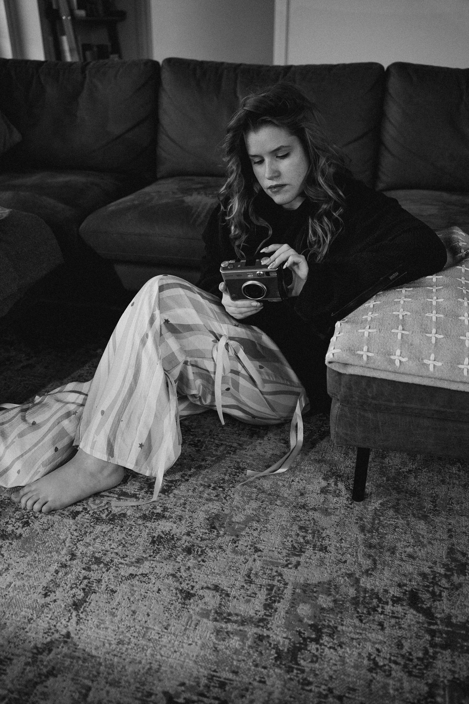

Документальный фотограф из Хельсинки.
Документальная фотография — это искусство видеть правду. В центре моего подхода — настоящие эмоции, искренние взгляды и живые истории. На съёмке я стараюсь стать вашим другом: поддержать, подбодрить и подсказать, чтобы вы чувствовали себя спокойно и уверенно.
Каждая история уникальна. Если вам кажется, что вы не фотогеничны, позвольте мне показать, как вы прекрасны на самом деле.
Я верю, что любовь — это не только про двоих. Это про себя, семью, друзей, домашних животных, любимое дело, про моменты, которые хочется сохранить.
Я люблю людей через свою камеру. Неважно, есть ли у вас опыт съёмок, — напишите мне, и вместе мы создадим фотографии, в которых вы узнаете себя и почувствуете жизнь.
Фотография однажды спасла меня — стала маяком в самый тёмный день.
Как и у многих творческих людей, моё вдохновение выросло из боли. Но сегодня мой дом — фотография — стоит на крепком фундаменте. Я знаю, зачем и для кого снимаю.
Я хочу, чтобы люди могли увидеть себя моими глазами: настоящими, живыми, красивыми — именно в тот момент, где они есть.
Я — документальный фотограф из Хельсинки, и моя съёмка — это не про фальшь и не про идеальную картинку. Это про жизнь, которую можно напечатать, вложить в альбом и спустя годы снова открыть, чтобы вспомнить себя такими, какими вы были: счастливыми, искренними, настоящими.
Моя главная цель — помочь вам сохранить память и почувствовать себя особенными.